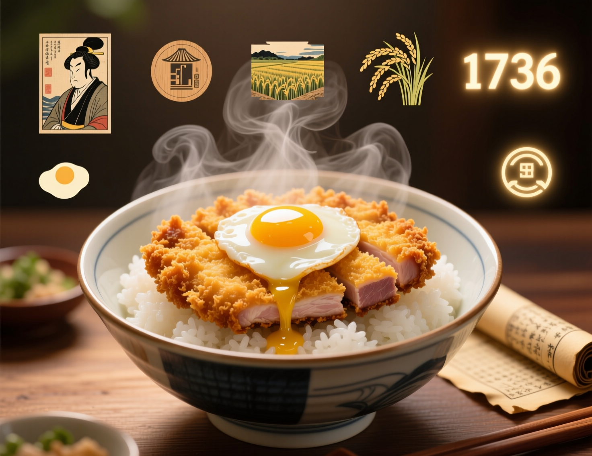
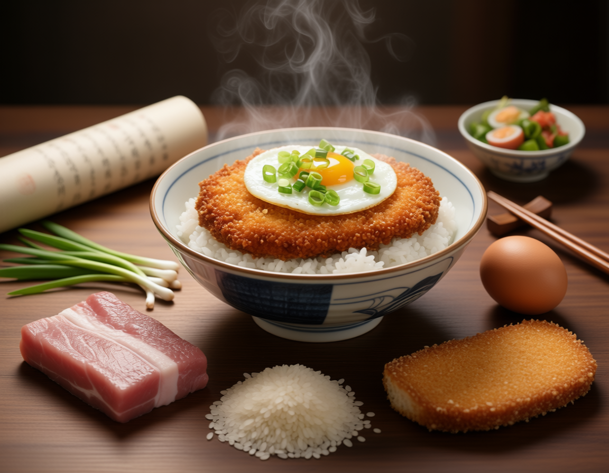
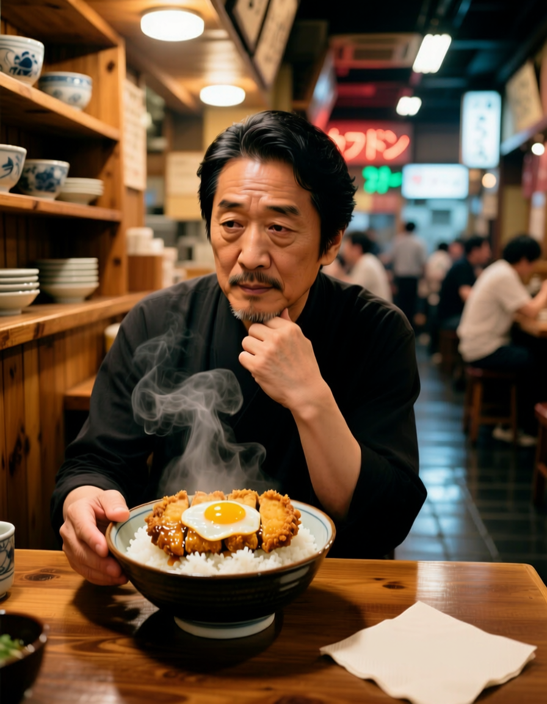

O katsudon é um prato japonês feito com fatias de tonkatsu (carne de porco empanada) sobre arroz,
coberto com um molho doce e salgado à base de shoyu, dashi e açúcar. Sua criação data do
início do século XX, quando uma mãe, buscando trazer sorte para seu filho em um exame importante,
combinou tonkatsu com arroz em uma tigela (domburi). O nome "katsudon" é uma junção de "katsu"
(referência à vitória) e "don" (abreviação de domburi), tornando o prato símbolo de prosperidade
e sucesso. Atualmente, é uma refeição popular e reconfortante no Japão e no exterior.
Curiosidades sobre o Katsudon

Como mencionado antes, o nome "katsudon" deriva de "katsu" (vitória) e "don"
(domburi). Por isso, muitas pessoas comem katsudon antes de exames, jogos
importantes ou eventos importantes, acreditando que tiveram boa sorte e sucesso.
Apesar de serem amplamente populares em todo o Japão, existem variações
regionais do katsudon. Por exemplo, em algumas áreas, pode ser feito com um
molho mais adocicado, enquanto outras preferem um molho mais salgado ou picante.
Existe uma versão feminina do katsudon chamada "oyakodon"
(literalmente "arroz com filhos e pais"). Neste prato, o tonkatsu é substituído
por frango e ovos crus, criando um contraste interessante de sabores e texturas.
O katsudon é frequentemente associado à culinária de conforto no Japão. Muitas
vezes o prato reconfortante e ideal para dias frios ou momentos de tristeza,
especialmente porque o nome sugere positividade e esperança.
Com a crescente popularidade da culinária japonesa no mundo, o katsudon ganhou
espaço em restaurantes japoneses fora do Japão. Ele é uma das opções preferidas
entre os amantes de comida japonesa por causa de sua combinação de sabores e simplicidade.
Ingredientes do Katsudon

Ingredientes para o Tonkatsu (Porco Empanado):
4 fatias finas de carne de porco (lombo ou alcatra)
Farinha de trigo
Ovos
Panko (pão ralado japonês)
Óleo vegetal para fritar
Ingredientes para o Molho:
1/2 xícara de shoyu (molho de soja)
1/2 xícara de caldo dashi (ou água com extrato de camarão/kombu)
2 colheres de sopa de açúcar
1 colher de sopa de mirin (vinho doce japonês)
Ingredientes para o Arroz e Finalização:
Arroz branco cozido
2 ovos (1 para cozinhar com o molho, 1 para servir cru ou frito)
Pessoas relacionadas com a receita

O katsudon simboliza sorte e sucesso devido ao seu nome
("katsu" = vitória) e é frequentemente usado em doramas e animes
para marcar momentos importantes, além de representar culinária
tradicional e conexões emocionais entre personagens.
Dorama:
No dorama japonesa "Gokusen" de 2002, o katsudon é frequentemente
mencionado como um prato reconfortante e simbólico, especialmente
em momentos de tensão ou decisões importantes, refletindo seu papel
cultural como comida de sorte.
Anime:
Em "My Hero Academia" o katsudon é o prato favorito de Izuku Midoriya.
Ele o consome em momentos de reflexão ou necessidade de conforto,
destacando sua personalidade gentil e determinada. O prato também serve
como uma ligação emocional com All Might, reforçando os laços entre eles.
Outros Doramas e Animes:
O katsudon é usado em animes e doramas para simbolizar conforto e motivação,
aparecendo em momentos de decisão, reflexão ou conexão emocional. Em alguns
animes, ele reflete esperança, enquanto em alguns doramas, é associado a
momentos românticos e familiares.